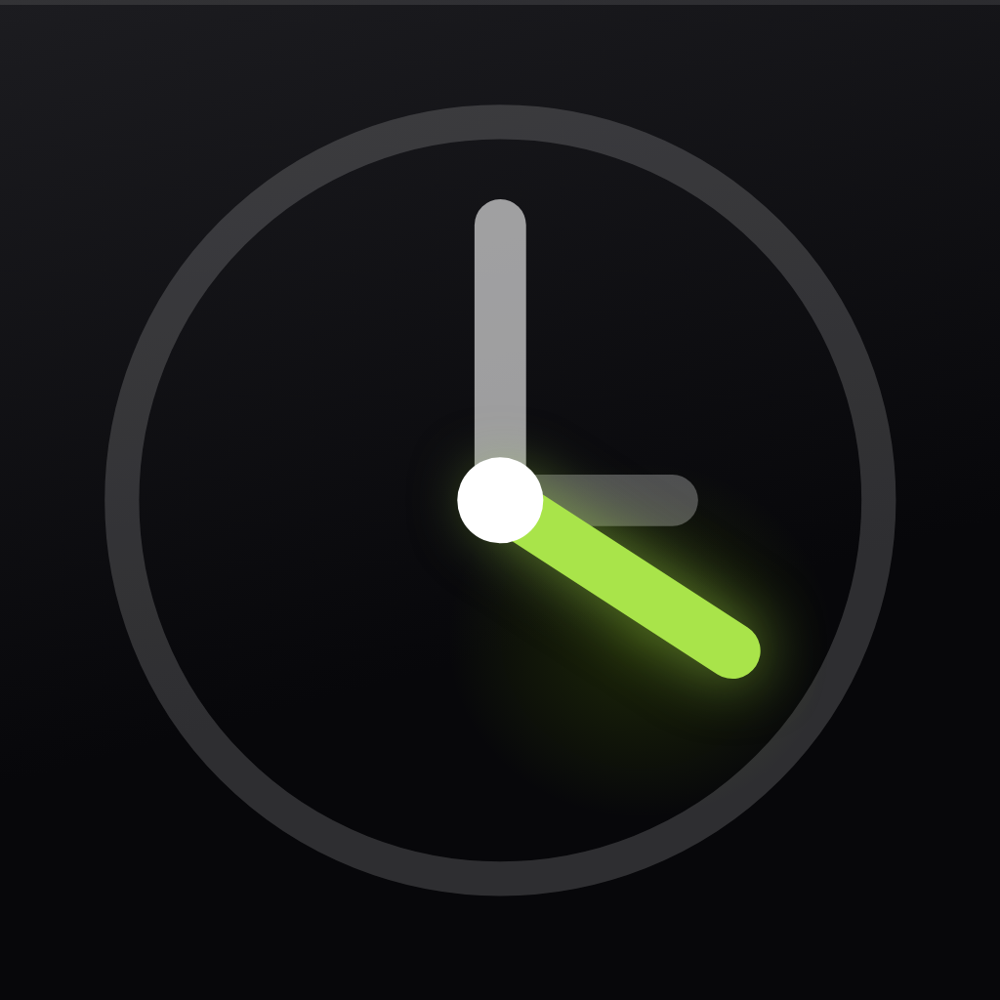

指令闹钟 —— 一个会先看看现实世界、再决定要不要叫你的闹钟。
普通闹钟只知道现在几点。指令闹钟还知道外面下没下雨、有多冷、紫外线多强，以及你是刚到家还是刚离开公司。你给闹钟挂上条件，闹钟自己决定怎么处理：条件成立才响、条件成立反而不响，或者提前、延后几分钟再响。
「下雨的早上提前 20 分钟叫我」「到家提醒我收衣服」「零度以下就别叫我去跑步」——每一条都是一个闹钟，不是一套需要你维护的流程。所有数据都存在你自己的设备上，不用注册，也没有账号可登。
免费下载。免费版可建 3 条闹钟，并且所有条件都对你开放，先用过再决定。
Pro 解除闹钟数量上限，并解锁天气、温度、紫外线三种条件。可选按月订阅、按年订阅，或一次性买断。具体价格在应用内购买前显示。任何版本都不含广告。
时钟到点就响。指令闹钟是到点并且某件事成立才响，或者因为你到了某个地方才响。你先选一个唤起方式（一个时刻，或者进入 / 离开某地），再挂上天气、温度这类条件，最后决定条件成立时是该响、该安静，还是该提前或延后。
地理围栏闹钟必须在 app 已经关掉的情况下也能察觉你越过了边界，而 iOS 只把这类事件投递给拿到「始终」权限的应用。天气和温度条件也需要一个位置才能查预报。如果你只给「使用期间」，app 仍然能用，但地理围栏闹钟和后台条件判断会变得不可靠——app 会在相关页面上直接告诉你这一点。
只有一种情况：把一个坐标发给苹果的天气服务去换预报，而且仅限真正用到了天气、温度或紫外线条件的闹钟。这个坐标不会保存在你手机之外的任何地方，也永远到不了我们手里——我们没有服务器。
时间闹钟、地理围栏闹钟，以及时间和位置这两个条件，都能离线工作。天气、温度、紫外线条件需要联网取预报。取不到预报时，这一轮就不排这条闹钟，而不是靠猜。
最常见的情况是条件本来就没成立——这正是这个 app 的用途。打开那条闹钟看看它的提醒方式：「提醒」表示只在条件成立时才响，「不提醒」表示条件成立时反而安静。另外也确认一下闹钟开关是开着的、定位仍然是「始终」、闹钟权限没有在系统设置里被收回。
可以。从音乐库里挑任意一首，也可以用内置铃声或者静音。导入的曲目所有闹钟共用。我们只保存一个指向这首曲子的引用，音频本身始终留在你的音乐库里。
来自 iOS 内置的天气服务。app 读取闹钟计划触发那一刻的预报，归并成九个通俗类别（晴天、多云、下雨、下雪、雾、霾、刮风、雷电、冰雹），不对原始数据做任何加工或翻译。
删掉那条闹钟，或者删掉这个 app。指令闹钟存的所有东西都在设备上它自己的沙盒里，卸载即全部消失。没有账号，我们这边也没有任何备份需要清理。
遇到问题或者想提需求，欢迎联系：
我们会尽量在 24 小时内回复每一条反馈。